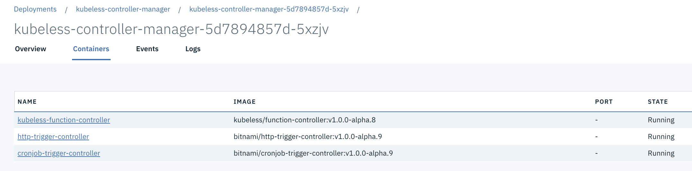

Function as a Service
Kubeless
To install kubeless on ICP we first connect to the cluster and then use the command below:
$ kubectl create namespace kubeless
$ kubectl create -f https://github.com/kubeless/kubeless/releases/download/v1.0.0-alpha.8/kubeless-v1.0.0-alpha.8.yaml -n kubelessThe image is using RBAC:
The deployment creates one pod with 3 containers inside: 
We need to have the kubeless CLI install:
$ export OS=$(uname -s| tr '[:upper:]' '[:lower:]')
$ curl -OL https://github.com/kubeless/kubeless/releases/download/$RELEASE/kubeless_$OS-amd64.zip && \
unzip kubeless_$OS-amd64.zip && \
sudo mv bundles/kubeless_$OS-amd64/kubeless /usr/local/bin/To deploy a simple hello
The code for this function is under this repository but it is a simple python function implementing the serverless 'interface':
def hello(event, context):
print(event)
return event['data']To deploy we can use the command:
$ kubeless function deploy hellojb --runtime python3.6 --trigger-http --from-file functionHello.py --handler functionHello.hello
INFO[0000] Deploying function...
INFO[0001] Function hellojb submitted for deployment
INFO[0001] Check the deployment status executing 'kubeless function ls hellojb'To see the functions deployed
$ kubectl get functionsor
$ kubeless function ls
NAME NAMESPACE HANDLER RUNTIME DEPENDENCIES STATUS
hellojb greencompute test.hello python3.6 1/1 READYThe deployment of a function creates automatically a pod:
$ kubectl describe pod hellojb
...
Containers:
hellojb:
Container ID: docker://53ca1131747e5b18bfeb67609b4e7bb2400cf45202ade2c03274b9df1eff9bc2
Image: kubeless/python@sha256:0c9f8f727d42625a4e25230cfe612df7488b65f283e7972f84108d87e7443d72
Image ID: docker-pullable://kubeless/python@sha256:0c9f8f727d42625a4e25230cfe612df7488b65f283e7972f84108d87e7443d72
Port: 8080/TCP
Host Port: 0/TCP
State: Running
Started: Thu, 06 Sep 2018 17:12:52 -0700
Ready: True
Restart Count: 0
Liveness: http-get http://:8080/healthz delay=3s timeout=1s period=30s #success=1 #failure=3
Environment:
FUNC_HANDLER: hello
MOD_NAME: test
FUNC_TIMEOUT: 180
FUNC_RUNTIME: python3.6
FUNC_MEMORY_LIMIT: 0
FUNC_PORT: 8080
PYTHONPATH: /kubeless/lib/python3.6/site-packages:/kubeless
Mounts:
/kubeless from hellojb (rw)
/var/run/secrets/kubernetes.io/serviceaccount from default-token-9nw2z (ro)and kubeless create service for each function:
$ kubectl describe svc hellojb
Name: hellojb
Namespace: greencompute
Labels: created-by=kubeless
function=hellojb
Annotations: <none>
Selector: created-by=kubeless,function=hellojb
Type: ClusterIP
IP: 10.10.10.41
Port: http-function-port 8080/TCP
TargetPort: 8080/TCP
Endpoints: 192.168.130.101:8080
Session Affinity: None
Events: <none>- Remove the function
kubeless deleteCalling the function
The quickest way is to proxy the server and then call the local URL:
$ kubectl proxy -p 8080 &
$ kubeless function call hellojb --data 'Hello Bill!'A second way is to test using HTTP client.
Developing a predictive scoring function
In this project we are addressing how to develop a scoring service using Python, sklearn and serveless to deploy the model as function.
Compendium
- Excellent article from Martin Fowler
- Serverless framework: The Framework uses new event-driven compute services, like AWS Lambda, Google Cloud Functions, and more. It's a command-line tool, providing scaffolding, workflow automation and best practices for developing and deploying your serverless architecture.
- Apache OpenWhisk
- Claudia to deploy nodejs on AWS lambda
- Zappa: Zappa makes it super easy to build and deploy server-less, event-driven Python applications on AWS Lambda + API Gateway.
- Serverless conf: operational best practices
- Evaluating cost for FaaS